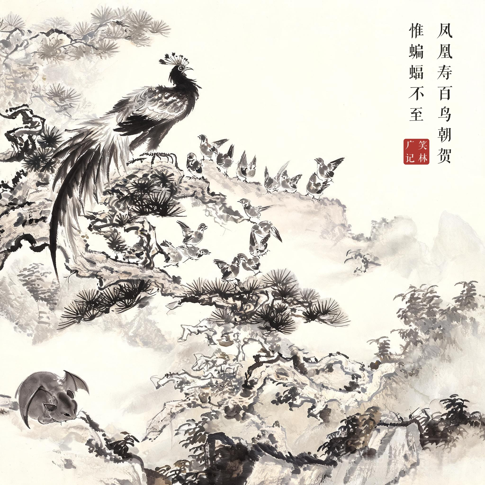
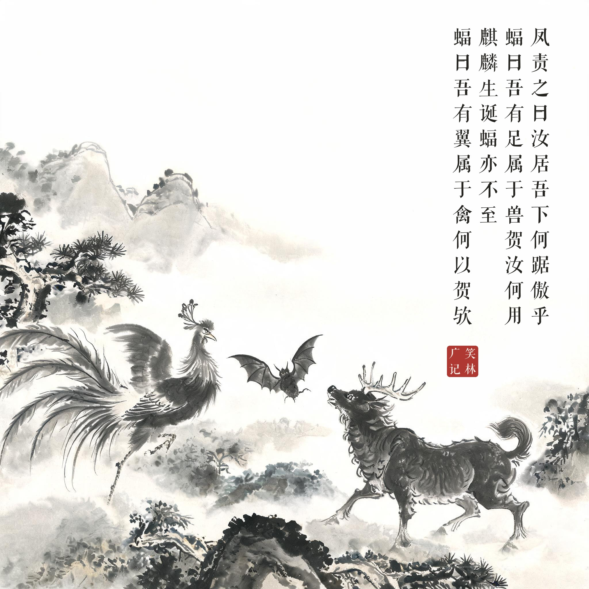
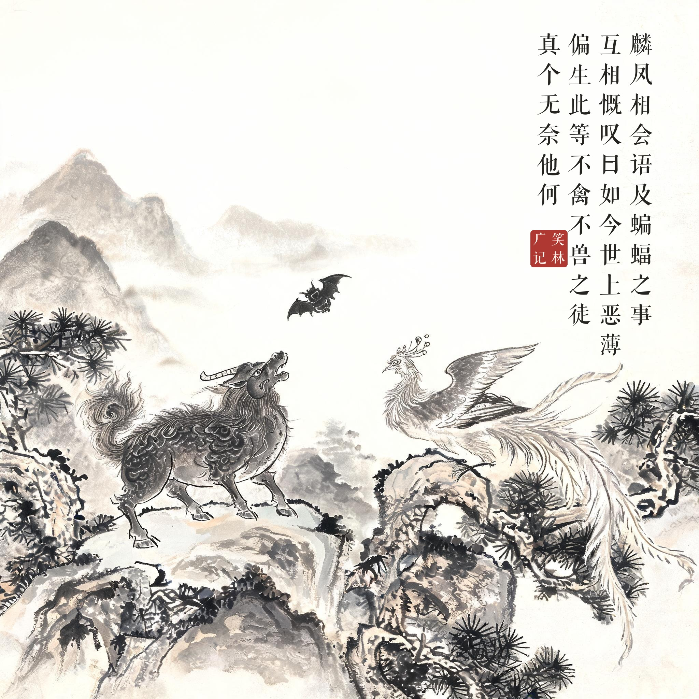

《笑林广记 · 讥刺部》（[清]游戏主人纂集）
凤凰寿，百鸟朝贺，惟蝙蝠不至。凤责之曰："汝居吾下，何踞傲乎？"蝠曰："吾有足，属于兽，贺汝何用？"一日，麒麟生诞，蝠亦不至，麟亦责之。蝠曰："吾有翼，属于禽，何以贺欤？"麟、凤相会，语及蝙蝠之事，互相慨叹曰："如今世上恶薄，偏生此等不禽不兽之徒，真个无奈他何！"
凤凰过寿，百鸟都来朝贺，只有蝙蝠不到。凤凰责问："你居我之下，怎么敢如此傲慢？"蝙蝠说："我有脚，属于兽类，贺你做什么？"到麒麟生日，蝙蝠又不到。麒麟责问，蝙蝠说："我有翅膀，属于禽类，凭什么贺你？"麒麟凤凰相会说起这事，一起叹道："如今世道浇薄，偏生出这种不禽不兽的东西，真拿他没办法！"
两头下注两头都躲——蝙蝠的骑墙术是给自己量身定做的：不站队，就永远不用随礼。